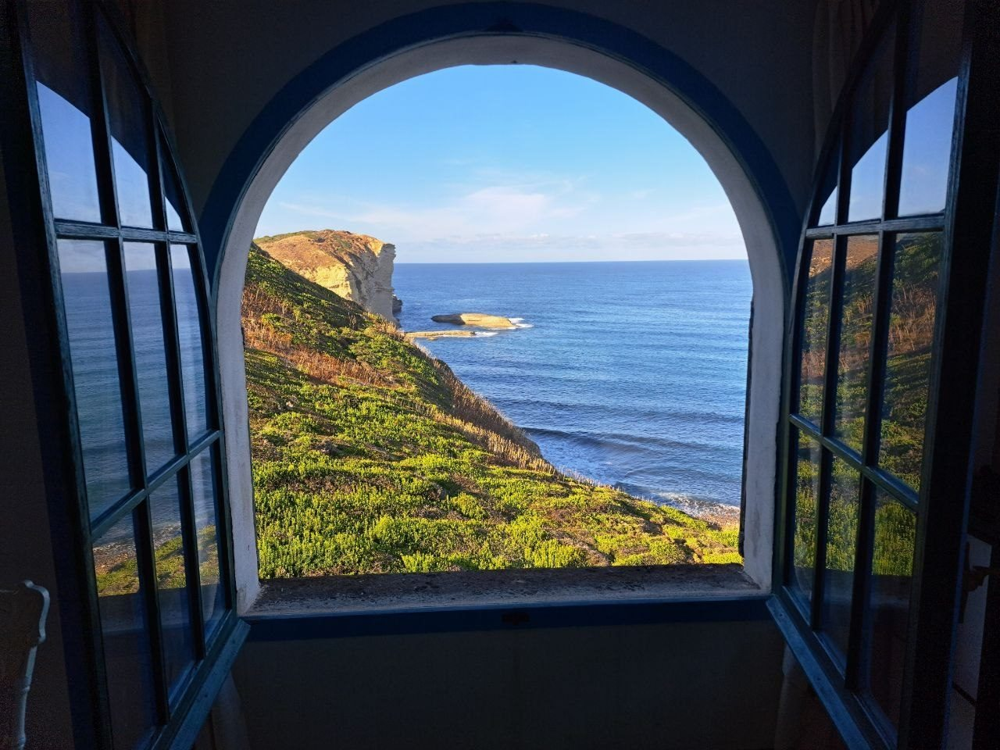
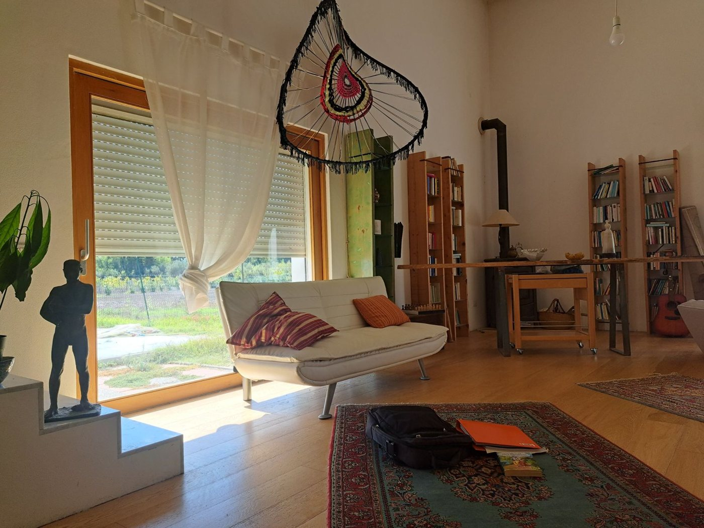
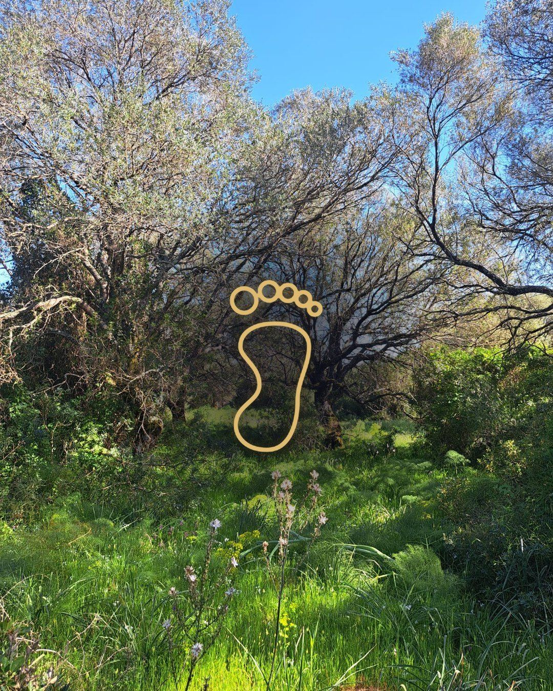
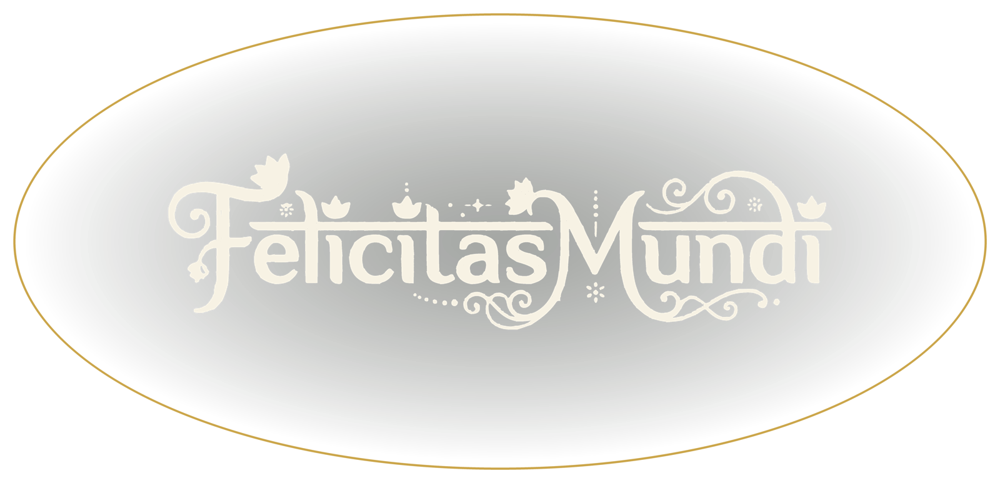

FelicitasMundi. Il primo è la Sardegna.

Dietro la foto ci sono le persone, i prodotti, i bisogni e gli incontri di quel luogo.
La scelta antitumore. Giuseppe Di Bella · Macro · 27,90 €


10 incontri. Si comincia da qui, e si approfondisce con il Bhakti Yoga. Con USCI.

2500 volantini, 1 roll-up, 2 striscioni e 30 maglie dell’azienda. 387,66 €



Il contesto stagionale ed itinerante tra i vicinati.
Centro Sociale · Baratili San Pietro, Oristano · dalle 10